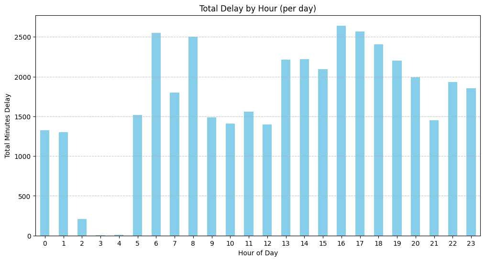
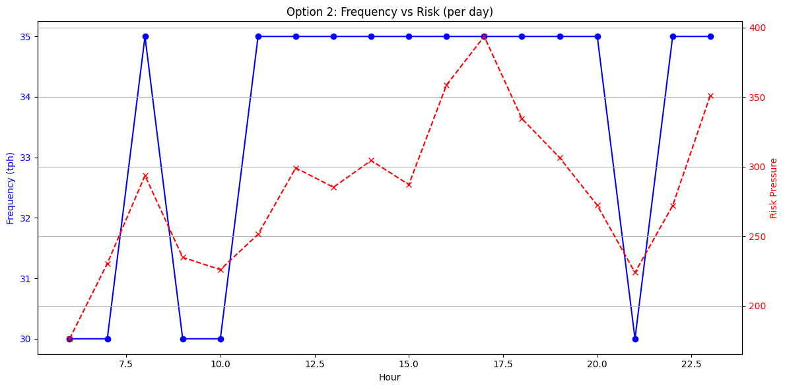

The question
Line 1 delays cluster at certain hours. Can trains be scheduled so that busy, high-risk hours get the most service, at a lower cost than running every hour at the maximum?
Data
14,142 Line 1 delay records from 2024, City of Toronto Open Data. Five delay causes (disorderly patrons, passenger alarms, and others) are weighted into an hourly "risk pressure" score.
Method
Linear programming (PuLP) chooses trains per hour (tph) between 25 and 35, from 6 am to midnight, under a fleet limit. Three objectives are compared against running 35 tph all day.

Results
One service day, 6 am to midnight.
| Strategy | Frequency | Train-hours | Cost | Saved vs baseline | Modelled avg delay (min) |
|---|---|---|---|---|---|
| Baseline: maximum frequency all day | 35 tph every hour | 630 | $166,950 | n/a | 3.00 |
| Option 1: lowest cost | 25 tph every hour | 450 | $119,250 | $47,700 | 4.20 |
| Option 2: risk-weighted (chosen) | 30 to 35 tph, more in high-risk hours | 605 | $160,325 | $6,625 | 3.14 |
| Option 3: highest minimum | 35 tph every hour | 630 | $166,950 | $0 | 3.00 |

Assumptions behind the numbers
Every figure above depends on these. They are modelling choices, not measurements.
Modelling assumptions
- Delay per hour is assumed to be 105 divided by trains per hour (3.0 minutes at 35 tph, 4.2 at 25 tph). It was not fitted to the data.
- Cost is about $265 per train-hour, a planning assumption.
- Risk weights for the five causes (1.1 to 1.5) were set by judgment.
- Frequencies can be any value between 25 and 35, so real timetables would need rounding.
Before any real use
- Fit the delay-versus-frequency relationship to real operating data.
- Use TTC cost figures, crew rules and fleet availability.
- Test the schedule in simulation before any change to service.
- Check effects on riders who travel at low-risk hours, so savings do not fall on one group.
Reliable AI checklist
The six questions of the Reliable AI Adoption Framework, answered for this project.
Business problem
Put scarce train service where delay risk is highest, and know what it costs.
Data readiness
2024 Line 1 delay records, City of Toronto Open Data. Counts of incidents, not measured travel times.
Governance and risk
Service cuts affect riders. Any saving must be weighed against who waits longer, and when.
Technology and tools
Linear programming makes the trade-off explicit and repeatable. No black box.
People and adoption
Planners choose between options. The model shows the cost and the modelled delay of each.
Outcomes and monitoring
After any change, compare real delays by hour with the modelled values, and revisit the assumptions.